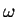
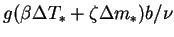
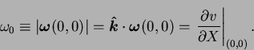
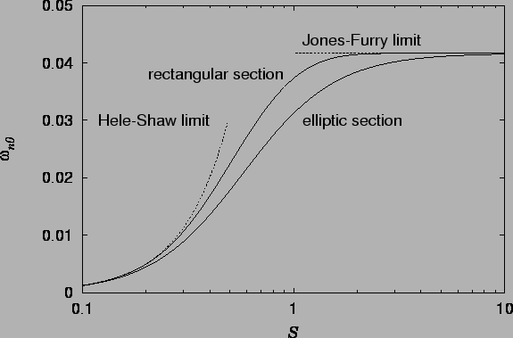
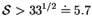
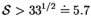

A convenient single scalar quantifying the effect of the end-walls
on the flow in the plane of spanwise symmetry is the magnitude of
the vorticity there. If  is defined as the dimensionless
vorticity, with scale
, then for purely vertical flows,
|  | (7.72) |
For elliptic sections, and considering only the buoyancy-induced part of
the flow,
 ,
,
For rectangular sections, using the series representation
(7.25) for  ,
the vorticity at the section centre is:
,
the vorticity at the section centre is:
The vorticity at the section centre is plotted from equations (7.73), (7.74), (7.75) and (7.76) in figure 7.7.
|  |
Figure 7.7 shows that the vorticity in the central vertical line of a cavity or duct of elliptic section is always less than that in a rectangular duct of the same aspect ratio. This is because the `end-walls' are closer, on average, to the plane of spanwise symmetry in the elliptic section than in the rectangular section. Their viscous damping of the vertical flow is therefore greater.
For rectangular cavities, figure 7.7 confirms the validity
of the estimate made in §7.4.3 that for
 the
flow in the plane
the
flow in the plane  would be essentially the same as for
would be essentially the same as for
 . The equivalent figure for the elliptic section is
, the value being larger because of the stronger
viscous damping from the `end-walls'.
. The equivalent figure for the elliptic section is
, the value being larger because of the stronger
viscous damping from the `end-walls'.